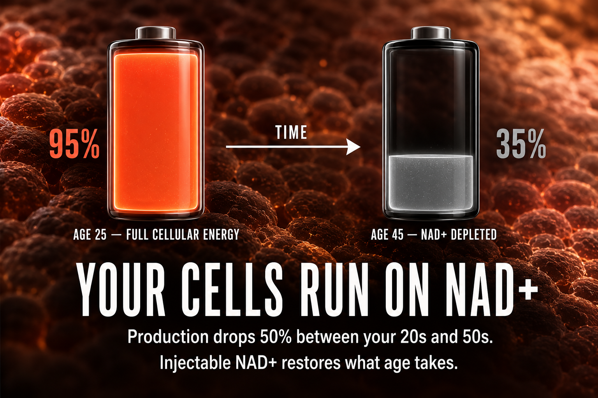

What NAD+ Is And How People Commonly Think About It
NAD+ (nicotinamide adenine dinucleotide) is a coenzyme found in every living cell. It is essential for hundreds of metabolic processes including energy production, DNA repair, cell signalling, and the activation of sirtuins, proteins associated with longevity and cellular health. NAD+ levels decline naturally with age, declining by approximately 50% between the ages of 40 and 60.
Injectable NAD+ bypasses the digestive system, which degrades much of the oral form before absorption. Subcutaneous injection delivers the compound directly into circulation at significantly higher bioavailability than capsules or tablets.
Think of your cells like smartphones. When you are young, say 25, your phone starts every day at 100%. It charges fast, holds the charge all day, runs every app without slowing down. By the time you are in your 40s, your cellular battery situation looks different. You wake up at 70%. By 2pm you are at 40%. By evening you are looking for a charger just to get through dinner. Apps crash. Things that used to be easy take longer. You are not broken, your battery just does not hold charge the way it used to. NAD+ is the chemical your cells use to make energy. It is as fundamental to your cells as a charging cable is to your phone. The problem is that NAD+ levels drop by roughly 50% between your 20s and your 50s. Your cells are not getting the same charge they used to. Injectable NAD+ is not a stimulant. It does not give you a buzz or make you feel wired. What most people describe is more like... things feeling easier. Less 2pm fog. Less dragging yourself through the afternoon. More reserve at the end of the day. Because the battery is actually charging properly again.
How To Picture It

How It Works
NAD+ is a cofactor in cellular respiration, the process by which cells convert nutrients into usable energy (ATP). It activates PARP enzymes responsible for DNA repair, and sirtuins responsible for cellular stress responses and longevity pathways. When NAD+ levels are adequate, these systems function optimally. When they decline with age, cellular repair slows, energy production decreases, and the accumulation of cellular damage accelerates.
Documented Benefits
Less fatigue and more consistent energy throughout the day.
Supports the repair systems that rely on adequate NAD+ availability.
Associated with longevity signalling and better stress resistance.
Helps support cleaner cellular energy production and resilience.
Often discussed in protocols targeting reduced brain fog and sharper daily focus.
Potential liver protection, metabolic support, and synergy with MOTS-c remain part of the NAD+ conversation even though the current icon set only covers the five core benefits above.
Dosing Protocol
| Phase | Dose | Notes |
|---|---|---|
| Starting | 25-50mg weekly | Conservative starting point |
| Standard | 50-100mg weekly | Most documented protocols |
| Loading | 100mg 2x weekly | First 4 weeks then reduce to weekly |
| Advanced | 250-500mg weekly | Community high-end protocols |
How To Reconstitute NAD+
NJ500 (500mg vial) + 6ml BAC water
6ml BAC water
83.3mg/ml Standard 50mg dose
| Your Dose | Units To Draw | Volume |
|---|---|---|
| 25-50mg weekly (starting) | Conservative starting point | |
| 50-100mg weekly (standard) | Most documented protocols | |
| 100mg 2x weekly (advanced) | First 4 weeks then reduce to weekly |
Dosage Build-Up Timeline
Most people start low enough to understand how the peptide feels before increasing the dose. Increase only after the current dose feels predictable, comfortable, and sustainable.
Common Mistakes
NAD+ can cause a flushing sensation when injected quickly. Draw slowly and inject over 30-60 seconds
NAD+ is foundational and cumulative. Effects are subtle and build over weeks
some people report sleep disruption at higher doses. Morning administration preferred
always swirl gently
NAD+ is foundational support, not a substitute for sleep, protein intake, hydration, and basic recovery habits.
Foundational compounds work best when the rhythm is steady. Random timing makes it harder to judge effects clearly.
Contraindications And Cautions
Use extra caution if you already know you are sensitive to niacin-related compounds or flushing reactions.
NAD+ supports cellular energy which theoretically could support cancer cell metabolism. Discuss with oncologist if applicable
Avoid during pregnancy until better safety data exists.
Use extra caution if you are pairing NAD+ with blood pressure medication, anticoagulants, or other circulation-sensitive protocols.
What To Track
- Energy levels (subjective 1-10 weekly)
- Sleep quality
- Cognitive clarity and focus
- Workout recovery time
- Resting fatigue level